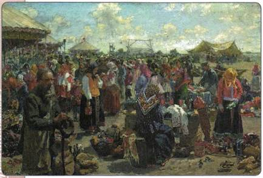
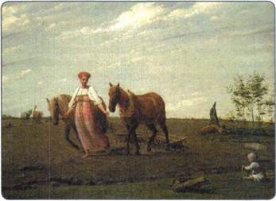
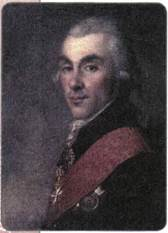

В чём состояли особенности экономического развития России в период правления Александра I? Как повлияла на экономику страны Отечественная война 1812 г.?
1. Экономический кризис
На развитие экономики Российской империи в период правления Александра I в наибольшей степени повлияли присоединение к континентальной блокаде Англии и Отечественная война 1812 г.
Вспомните, когда и при каких обстоятельствах Россия присоединилась к континентальной блокаде. В чём состояла её суть?
Общий объём материальных убытков за годы Отечественной войны 1812 г. и Заграничных походов русской армии составил 1 млрд рублей. Это была гигантская сумма, если учесть, что годовые доходы государства не превышали обычно 100 млн рублей. Разорёнными оказались западные районы страны, наиболее пострадавшие от войны.
Тяжёлым бременем для экономики государства стали заботы по восстановлению городов, разрушенных войной, в первую очередь Москвы. Правительство выплачивало жителям пострадавших городов специальные пособия, сумма которых в общей сложности составила 15 млн рублей.
2. Развитие сельского хозяйства
В первой четверти XIX в. Россия оставалась аграрной страной: 90 % населения было занято в сельском хозяйстве. Основой экономики было крестьянское хозяйство. Война повлекла за собой разорение городов и деревень, падение урожаев, привела к дальнейшему увеличению нажима помещиков на крестьян.

Ярмарка. Художник И. С. Куликов
Сельское хозяйство развивалось преимущественно экстенсивным путём, за исключением районов Южной Украины, степей Предкавказья и Заволжья.
В первой четверти XIX в. в результате развития товарно-денежных отношений и разрушения натурального хозяйства происходило разложение классического барщинного хозяйства.
В нечернозёмных губерниях (где земли были менее плодородными) многие помещики переводили своих крестьян с барщины на оброк. Чтобы уплатить оброк, доходов небольших крестьянских наделов не хватало, поэтому крестьяне здесь всё больше вовлекались в промыслы и отходничество. Другие помещики, стремясь избежать разорения своих хозяйств, увеличивали барскую запашку, урезая крестьянские наделы. Чтобы выжить, крестьяне также вынуждены были заниматься промыслами.
Среди крестьян сложилась особая прослойка — так называемые капиталистые крестьяне. Владея тысячами десятин земли, промыслами и даже зачастую собственными крепостными, они, однако, оставались юридически несвободными и выплачивали оброк своему помещику. Помещики не торопились давать «вольную» богатым крестьянам, поскольку оброк рос пропорционально крестьянским доходам.
В чернозёмной зоне барщина сохранялась. Крепостных крестьян было выгодно переводить на месячину (постоянную работу на барской запашке при выплате от помещика ежемесячного содержания). Крестьяне лишались при этом своих собственных земельных наделов. Распространена была и частичная оплата за выполнение барщинных работ. На месячину переводились также обслуга и дворовые люди, не имевшие земли.
Таким образом, в 1813—1825 гг. шло социальное расслоение внутри крестьянства, развитие товарно-денежных отношений, крестьянские и помещичьи хозяйства вовлекались в рыночные связи.
Сдерживающим фактором в развитии сельского хозяйства оставалось сохранение крестьянской общины. Члены общины коллективно владели землёй и ежегодно устраивали земельные переделы внутри общины между разными семьями.

На пашне. Весна. Художник А. Г. Венецианов
В общине господствовала система круговой поруки. Если одна семья собрала недостаточный урожай, не смогла выплатить оброк и т. п., то ей помогала вся община. Эти порядки отчасти мешали росту производительности крестьянских хозяйств, сохраняли уравнительное распределение, сдерживали применение новой техники.
Необходимо было принять срочные меры для выведения экономики страны из кризисного состояния. Александр I и другие наиболее дальновидные представители власти понимали, что коренное улучшение возможно лишь при решении крестьянского вопроса, прежде всего следовало ограничить и отменить крепостное право.
Одним из первых шагов в этом направлении стал уже упоминавшийся указ 1803 г. о «вольных хлебопашцах» (вспомните, что вы узнали о нём из § 2).
3. Отмена крепостного права в Прибалтике в 1816—1819 гг.
Более решительные шаги по крестьянскому вопросу Александр I предпринял в отношении окраин, западных губерний страны. Отношения между помещиками и крестьянами имели здесь свои особенности (вспомните какие, повторив материал на с. 46).
Ещё по реформе 1804 г. были чётко определены размеры крестьянских повинностей и платежей, а крестьяне признаны наследственными владельцами своих земельных участков. Однако помещиков это не устроило. В 1811 г. немецкие помещики Прибалтики обратились к царю с предложением освободить их крестьян от крепостной зависимости, но земли им при этом не давать. В 1816 г. Александр I утвердил закон о полной отмене крепостного права в Эстляндии при сохранении земель за помещиками. В 1818—1819 гг. такие же законы были приняты в отношении крестьян остальных прибалтийских земель — Курляндии и Лифляндии.
Опыт реформы в Прибалтике можно было перенести и на другие части страны. О желании решить крестьянский вопрос стали заявлять либеральные помещики белорусских, псковских, петербургских и пензенских земель. Сложная ситуация, вызванная экономическим кризисом после войны 1812 г., также вынуждала правительство искать решение крестьянского вопроса.

А. А. Аракчеев
4. Проекты освобождения крестьян
В 1818 г. был образован Секретный комитет для подготовки крестьянской реформы. Руководить им было поручено Д. А. Гурьеву (возглавлявшему Министерство уделов и Министерство финансов). Комитет занялся рассмотрением проектов, подготовленных передовыми помещиками. Свои проекты представили сам Гурьев и член Государственного совета Н. С. Мордвинов. Большинство проектов было построено на идее освобождения крестьян без земли, однако все они были отклонены императором. В 1819 г. Секретный комитет прекратил свою деятельность.
Свой проект освобождения крестьян от крепостной зависимости представил также в 1818 г. генерал А. А. Аракчеев. Он возглавлял военное министерство, однако неформально имел при дворе огромное влияние: именно через Аракчеева шли все доклады от Государственного совета к царю, фактически Аракчеев был ближайшим советником Александра I. Как человек преданный, честный, работоспособный, исполнительный (хотя и отличавшийся жёсткостью в достижении целей), он пользовался особым доверием императора.
Аракчеев был известен успешным ведением хозяйства в своём имении Грузино в Новгородской губернии. Ему удалось создать там крупное хозяйство, ориентированное на рынок. Аракчеев открыл для крестьян Заёмный банк, выдававший ссуды на постройку домов, покупку скота. Поощрял он и предпринимательство своих селян. Правилом стало оказание помощи беднякам. Однако методы создания образцового хозяйства были жёсткими: крестьяне строго наказывались за малейшее нарушение и бесхозяйственность. Прибыль от имения была настолько велика, что большие деньги направлялись на постройку дорог, храмов и каменных домов для крестьян, создание парков, конных заводов. В 1810 г. Грузино посетил Александр I, который был просто изумлён результатами, достигнутыми Аракчеевым.
Если большинство проектов помещиков предполагало освобождение крестьян без земли, то главной идеей проекта Аракчеева было освобождение их с земельными наделами. По плану Аракчеева государство должно осуществить постепенный выкуп крестьян у помещиков. Аракчеев предлагал царю выделять ежегодно по 5 млн рублей (это была рыночная стоимость крепостных, ежегодно выставляемых на торги) на выкуп имений у тех помещиков, которые будут согласны на это. Этим могли воспользоваться в первую очередь те дворяне, которые заложили свои поместья и едва сводили концы с концами. Выкупленные государством земли должны были распределяться между освобождёнными крестьянами (по две десятины на душу). Размеры наделов были небольшими, что заставило бы крестьян, по замыслу Аракчеева, «подрабатывать» у помещиков.
Проект Аракчеева вполне мог хотя бы на время устроить и помещиков, и крестьян, несмотря на то что он не решал полностью крестьянский вопрос. Однако и этот проект не был осуществлён.
5. Военные поселения
Однако император воплотил в жизнь другую идею Аракчеева — создание военных поселений. Этим шагом рассчитывали одновременно и решить крестьянский вопрос, и преодолеть экономический кризис, снизив расходы государства на содержание армии.
Создание военных поселений началось с 1816 г. Предполагалось, что поселённые в сельской местности войска («поселяне-хозяева») будут совмещать военную службу с занятиями сельским хозяйством. Поселения создавались из солдат, имевших жён и отслуживших в армии не менее 6 лет, а также из бывших государственных крестьян в возрасте от 18 до 45 лет. Дети всех поселенцев с 7-летнего возраста также зачислялись на службу.
Размещение военных поселений осуществлялось лишь на государственных землях. Круглый год крестьяне проходили военное обучение. Суровая регламентация всех сторон хозяйственной жизни, необходимость работать по приказу командира, соблюдать дисциплину, высокие нагрузки — всё это вызывало недовольство военных поселян. Следствием этого стали в 1817—1819 гг. многочисленные восстания государственных крестьян, которых превращали в военных поселенцев. С точки зрения экономии военных расходов поселения выполнили стоявшую перед ними задачу. За период с 1825 по 1850 г. было сэкономлено 45,5 млн рублей. Однако создание военных поселений ограничивало возможности свободного развития хозяйства.
6. Развитие промышленности, торговли, путей сообщения
После преодоления послевоенного кризиса промышленность и торговля в России развивались достаточно устойчиво. Если в 1804 г. в стране число фабрик, заводов и мануфактур достигало 2500, то в 1825 г. их стало свыше 5000. Общая численность рабочих за это время выросла с 95 до 210 тыс., а наёмных работников среди них — с 45,6 (они составляли 48 % от общего количества рабочих) до 114,5 тыс. (54 % от общего количества рабочих).
Большинство фабрик и заводов выполняло заказы государства, связанные в основном с производством оружия и сукна для армии, а также изготовляло товары для вывоза за рубеж. Однако ещё до войны 1812 г. начала ускоренно развиваться лёгкая промышленность. Её изделия шли уже в основном на продажу внутри страны, что свидетельствовало о расширении внутреннего рынка. К концу 1820-х гг. Россия перестала ввозить ситцы из-за границы.
Однако если в XVIII в. Россия вывозила железо в Европу, то теперь она всё больше закупала его за границей, что говорило о её нарастающем отставании от других стран. Основными промышленными центрами по-прежнему оставались Петербург, Москва, Тула, Владимир, район Урала. В послевоенный период стали применять паровые машины на предприятиях.
Для растущего внутреннего рынка требовалось совершенствование путей сообщения, главными из которых оставались водные. В 1803—1805 гг. каналами были соединены реки Кама и Северная Двина, Днепр и Висла, Западная Двина и Неман. В 1808—1811 гг. вступили в строй Мариинская и Тихвинская системы каналов, соединившие бассейны рек Волги и Невы и проложившие водный путь от Рыбинска до Санкт-Петербурга. В 1815 г. был спущен на воду первый русский пароход «Елизавета».
Началось строительство мощёных дорог (в 1825 г. их протяжённость была уже 390 км).
Внутренняя торговля по-прежнему оставалась преимущественно ярмарочной. Крупнейшими ярмарками страны были Макарьевская (в 1817 г. переместилась из Макарьевского монастыря в Нижний Новгород и стала называться Нижегородской ярмаркой), Коренная (под Курском), Киевская, Харьковская, Ирбитская и др.
За рубеж продавали в основном зерно, пеньку (волокно из конопли для производства канатов), сало, древесину. Ввозили главным образом предметы потребления и промышленные полуфабрикаты (изделия, которым необходимо пройти обработку, прежде чем стать готовым продуктом).
ПОДВЕДЁМ ИТОГИ
В первой четверти XIX в. в экономике России всё более явственно проявлялись капиталистические тенденции: вырос рынок вольнонаёмного труда, усилились связи крестьянских и дворянских хозяйств с рынком, развивалось отходничество. В то же время прочные основы в экономике по-прежнему имела феодально-крепостническая система: крупные дворянские вотчины являлись главными поставщиками хлеба за границу, сохранялась община и барщина. Преодолев кризис, связанный с потерями в Отечественной войне 1812 г., экономика России вышла на устойчивые темпы развития: к 1825 г. по сравнению с началом XIX в. более чем вдвое увеличилось количество фабрик, выросла техническая оснащённость предприятий и протяжённость путей сообщения.
Вопросы и задания для работы с текстом параграфа
1. Можно ли назвать кризисом ситуацию в экономике после событий 1812— 1814 гг.? Поясните свой ответ. 2. Почему помещичьи хозяйства Нечерноземья развивались иначе, чем в чернозёмной зоне? Назовите важнейшие различия. 3. Почему сохранение крестьянской общины считают сдерживающим фактором в развитии экономики? 4. Когда была проведена отмена крепостного права в Прибалтике? Какие особенности имела эта реформа? 5. В чём состоял смысл проекта А. А. Аракчеева по освобождению крестьян? 6. Какова была главная цель правительства при создании военных поселений? Удалось ли её достичь?
Думаем, сравниваем, размышляем
1. Почему в годы правления Александра I в России впервые начали обсуждать вопрос об отмене крепостного права на высшем правительственном уровне?
2. Почему отмена крепостного права произошла раньше всего именно в Прибалтике? Как вы думаете, мог ли Александр I затем отменить крепостное право во всей стране? 3. Привлекая дополнительную литературу, узнайте подробнее, что собой представляли военные поселения. Составьте небольшой рассказ о жизни и быте военных поселенцев. 4. Соберите информацию, показывающую увеличение количества фабрик и мануфактур за период с 1804 по 1823 г. 5. Используя Интернет, сравните судьбы А. А. Аракчеева и М. М. Сперанского. Удалось ли им реализовать свои планы?